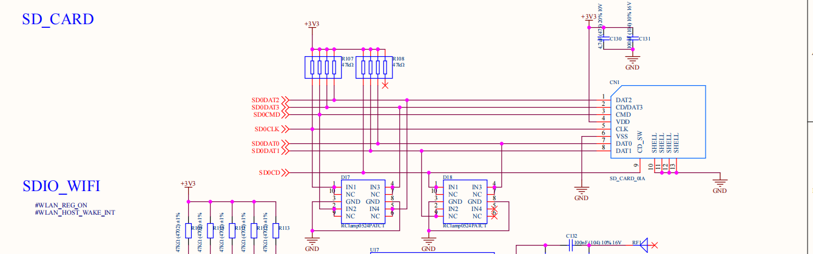
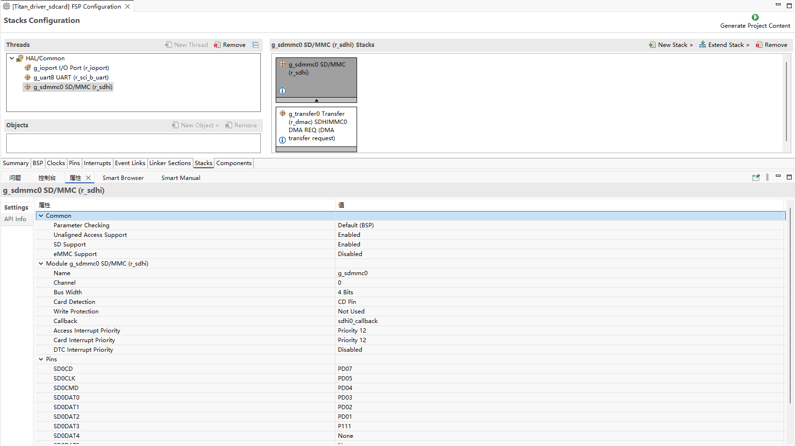
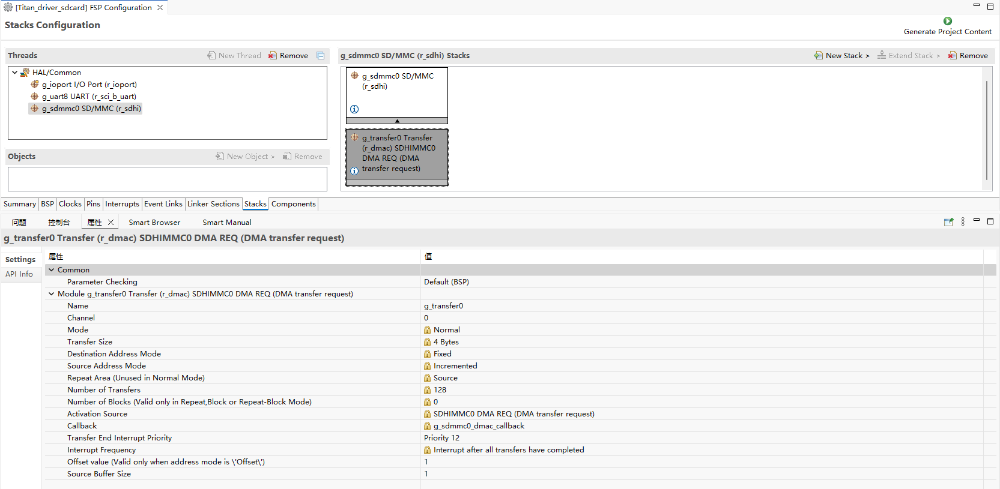
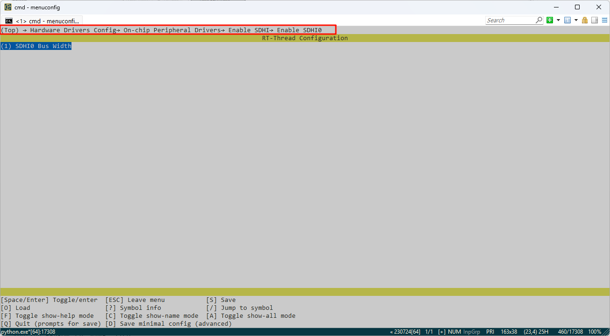
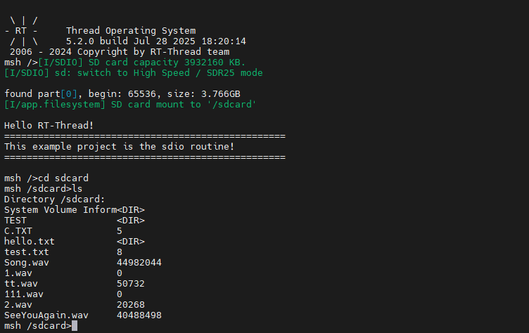

RA8P1 Titan Board SD卡文件系统使用说明
中文|English
简介
本例程使用开发板上 SD 卡槽中的 SD 卡作为文件系统的存储设备，展示如何在 SD 卡上创建文件系统（格式化卡），并挂载文件系统到 RT-Thread 操作系统中。
文件系统挂载成功后，展示如何使用文件系统提供的功能对目录和文件进行操作。
硬件说明
本次示例和存储器连接通过 SDIO 接口，使用的是硬件的 SDIO，原理图如下所示：

FSP配置说明
新建 stacks 选择 r_sdhi 并配置 sdhi0 配置信息如下：


RT-Thread Settings 配置
在配置中打开 SDHI0，并配置 Bus Width 为 1。

示例工程说明
本例程的文件系统初始化源码位于 ./board/ports/filesystem/drv_filesystem.c 中：
/*
* Copyright (c) 2006-2021, RT-Thread Development Team
*
* SPDX-License-Identifier: Apache-2.0
*
* Change Logs:
* Date Author Notes
* 2018-12-13 balanceTWK add sdcard port file
* 2021-05-10 Meco Man fix a bug that cannot use fatfs in the main thread at starting up
* 2021-07-28 Meco Man implement romfs as the root filesystem
*/
#include <rtthread.h>
#include <dfs_romfs.h>
#include <dfs_fs.h>
#include <dfs_file.h>
#if DFS_FILESYSTEMS_MAX < 4
#error "Please define DFS_FILESYSTEMS_MAX more than 4"
#endif
#if DFS_FILESYSTEM_TYPES_MAX < 4
#error "Please define DFS_FILESYSTEM_TYPES_MAX more than 4"
#endif
#define DBG_TAG "app.filesystem"
#define DBG_LVL DBG_INFO
#include <rtdbg.h>
#ifdef BSP_USING_FS_AUTO_MOUNT
#ifdef BSP_USING_SDCARD_FATFS
static int onboard_sdcard_mount(void)
{
if (dfs_mount("sd", "/sdcard", "elm", 0, 0) == RT_EOK)
{
LOG_I("SD card mount to '/sdcard'");
}
else
{
LOG_E("SD card mount to '/sdcard' failed!");
}
return RT_EOK;
}
#endif /* BSP_USING_SDCARD_FATFS */
#endif /* BSP_USING_FS_AUTO_MOUNT */
#ifdef BSP_USING_FLASH_FS_AUTO_MOUNT
#ifdef BSP_USING_FLASH_FATFS
#define FS_PARTITION_NAME "filesystem"
static int onboard_fal_mount(void)
{
/* 初始化 fal 功能 */
extern int fal_init(void);
extern struct rt_device* fal_mtd_nor_device_create(const char *parition_name);
fal_init ();
/* 在 spi flash 中名为 "filesystem" 的分区上创建一个块设备 */
struct rt_device *mtd_dev = fal_mtd_nor_device_create (FS_PARTITION_NAME);
if (mtd_dev == NULL)
{
LOG_E("Can't create a mtd device on '%s' partition.", FS_PARTITION_NAME);
return -RT_ERROR;
}
else
{
LOG_D("Create a mtd device on the %s partition of flash successful.", FS_PARTITION_NAME);
}
/* 挂载 spi flash 中名为 "filesystem" 的分区上的文件系统 */
if (dfs_mount (FS_PARTITION_NAME, "/", "lfs", 0, 0) == 0)
{
LOG_I("Filesystem initialized!");
}
else
{
dfs_mkfs ("lfs", FS_PARTITION_NAME);
if (dfs_mount ("filesystem", "/", "lfs", 0, 0) == 0)
{
LOG_I("Filesystem initialized!");
}
else
{
LOG_E("Failed to initialize filesystem!");
}
}
return RT_EOK;
}
#endif /*BSP_USING_FLASH_FATFS*/
#endif /*BSP_USING_FLASH_FS_AUTO_MOUNT*/
const struct romfs_dirent _romfs_root[] =
{
#ifdef BSP_USING_SDCARD_FATFS
{ROMFS_DIRENT_DIR, "sdcard", RT_NULL, 0},
#endif
#ifdef BSP_USING_FLASH_FATFS
{ ROMFS_DIRENT_DIR, "fal", RT_NULL, 0 },
#endif
};
const struct romfs_dirent romfs_root =
{
ROMFS_DIRENT_DIR, "/", (rt_uint8_t*) _romfs_root, sizeof(_romfs_root) / sizeof(_romfs_root[0])
};
static int filesystem_mount(void)
{
#ifdef BSP_USING_FS
if (dfs_mount(RT_NULL, "/", "rom", 0, &(romfs_root)) != 0)
{
LOG_E("rom mount to '/' failed!");
}
/* 确保块设备注册成功之后再挂载文件系统 */
rt_thread_delay(500);
#endif
#ifdef BSP_USING_FS_AUTO_MOUNT
onboard_sdcard_mount();
#endif /* BSP_USING_FS_AUTO_MOUNT */
#ifdef BSP_USING_FLASH_FS_AUTO_MOUNT
onboard_fal_mount ();
#endif
return RT_EOK;
}
INIT_COMPONENT_EXPORT(filesystem_mount);
编译&下载
RT-Thread Studio：在RT-Thread Studio 的包管理器中下载 Titan Board 资源包，然后创建新工程，执行编译。
编译完成后，将开发板的Jlink接口与PC 机连接，然后将固件下载至开发板。
运行效果
按下复位按键重启开发板，等待 SD 挂载后进入 SD 卡文件系统目录查看 SD 卡上的文件。
